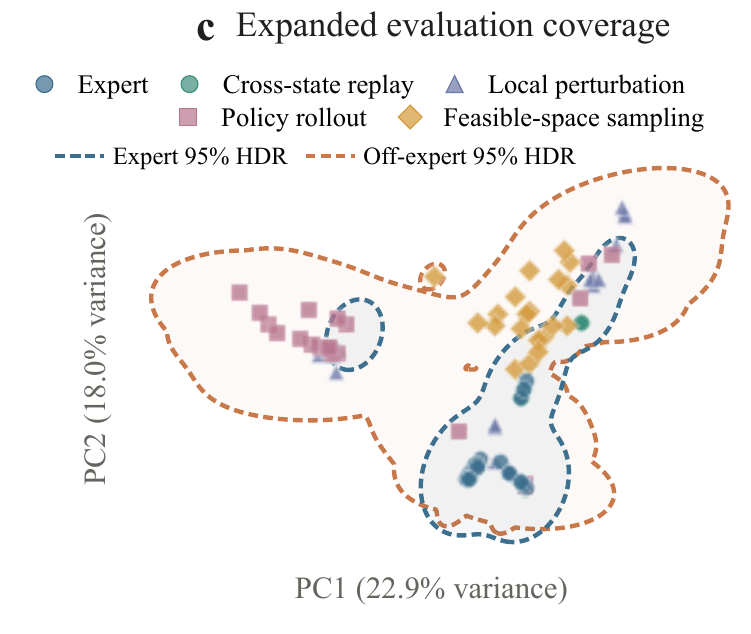

Reference frame
Grab roller
Seeing is not following.
Do robotic world models really follow actions?
Diagnosing and aligning action-conditioned generation for policy learning.
Anonymous authors
Action-conditioned world models are increasingly used as learned simulators for policy evaluation and improvement, yet their effectiveness rests on an unverified assumption: generated futures faithfully reflect arbitrary valid actions. Existing benchmarks are typically confined to expert demonstrations, leaving off-expert action following inadequately evaluated. To address this gap, we introduce WorldEcho, which probes action following over a broader action distribution using visual integrity and SE(3) trajectory alignment. Our diagnosis shows that current world models reasonably execute expert actions but struggle with diverse off-expert trajectories, either ignoring the commanded actions or producing visually invalid rollouts. We further propose WorldSync, which strengthens action following along three complementary axes: distributional coverage, representational grounding, and intervention-effect alignment. It broadens the training distribution over action consequences, grounds intermediate video representations in action-induced robot dynamics through an Action-Forcing Expert, and aligns predicted changes under action interventions with the corresponding changes in ground-truth futures. Experiments on RoboTwin benchmarks and real-robot tasks show that WorldSync improves WorldEcho metrics and serves as a more reliable simulator for iterative policy improvement, enabling policies to achieve higher success rates.
Part I / The action-following problem
Faithful means every valid action, not just the ones it has seen. Query the model beyond its demonstrations, and the video collapses or stays plausible while the motion stops listening.
Scroll horizontally to compare all four panels.
Grab roller
The simulator reference for the recorded action query.
Robot geometry breaks, blurs, or disappears under the query.
The video looks plausible, but its end-effector motion disagrees.
WorldEcho measures action following directly. From the same initial state, it replays each queried action in the simulator and scores the model's future against the reference, checking visual integrity and SE(3) end-effector alignment across five query types.
Visual integrity gate
Quality, temporal smoothness, end-effector visibility, and arm integrity must all pass.
Trajectory alignment
AnyPos recovers both end-effector trajectories; pose-aware NDTW compares them in SE(3).
Integrity-gated score
Valid rollouts use trajectory error; visually invalid rollouts receive a fixed penalty.
Guided by the WorldEcho diagnosis, WorldSync trains the world model to improve action following through expanded action coverage, auxiliary Action-Forcing Expert supervision, and intervention-effect alignment.
Coverage
Mix diverse simulated expert and off-expert trajectories with target-domain real expert data in a shared relative Cartesian action space.
Grounding
Predict future end-effector state changes from intermediate video features, grounding them in action-induced robot dynamics.
Alignment
Pair the same observation with different actions and match the change in predicted futures to the change in ground-truth futures.
WorldEcho / Leaderboard
Scroll horizontally to compare all metrics.
| Rank | Model | Gated error ↓ | Raw NDTW ↓ | Visual pass (%) ↑ | PSNR ↑ | SSIM ↑ | LPIPS ↓ | FVD ↓ |
|---|---|---|---|---|---|---|---|---|
| Rank 1 | WorldSync w/ pretrain Ours | 0.0228 | 0.0180 | 98.23 | 21.36 | 0.8738 | 0.0887 | 45.61 |
| Rank 2 | WorldSync Ours | 0.0234 | 0.0176 | 97.94 | 21.42 | 0.8743 | 0.0875 | 46.97 |
| Rank 3 | 0.0237 | 0.0151 | 96.97 | 21.17 | 0.8959 | 0.0949 | 30.77 | |
| Rank 4 | 0.0293 | 0.0210 | 96.97 | 20.83 | 0.8665 | 0.0915 | 69.58 | |
| Rank 5 | 0.0371 | 0.0292 | 97.14 | 19.22 | 0.8448 | 0.1182 | 68.78 | |
| Rank 6 | 0.0445 | 0.0127 | 88.80 | 22.95 | 0.8952 | 0.0658 | 51.89 | |
| Rank 7 | LingBotVA | 0.0446 | 0.0340 | 96.06 | 17.60 | 0.8272 | 0.1450 | 81.16 |
| Rank 8 | 0.0799 | 0.0419 | 85.09 | 15.10 | 0.7003 | 0.1525 | 86.36 |
WorldEcho / Evaluation coverage
Ask a world model for the consequences of an action, and it should answer for any action you might try. But it is trained on expert demonstrations, the narrow thread in this plot, while a policy in training wanders the whole spread around it. Inside the thread, every model looks faithful. Outside it, all six we tested degrade. WorldEcho measures the whole space.

Loading videos…
WorldSync / Policy improvement
WorldSync and expert-trained CtrlWorld drive the same self-evolution procedure with matched interaction, rollout, and training budgets in each domain. Stronger WorldEcho performance coincided with larger policy gains, in simulation and across four real-robot tasks.
Policy success 40% → 60% details
Policy success 48% → 68% after two rounds details
Policy success 76% → 96% after one round details
Policy success 72% → 88% after one round details
@misc{anonymous2026worldecho,
title = {Do Robotic World Models Really Follow Actions? Diagnosing and Aligning Action-Conditioned Generation for Policy Learning},
author = {Anonymous},
year = {2026}
}